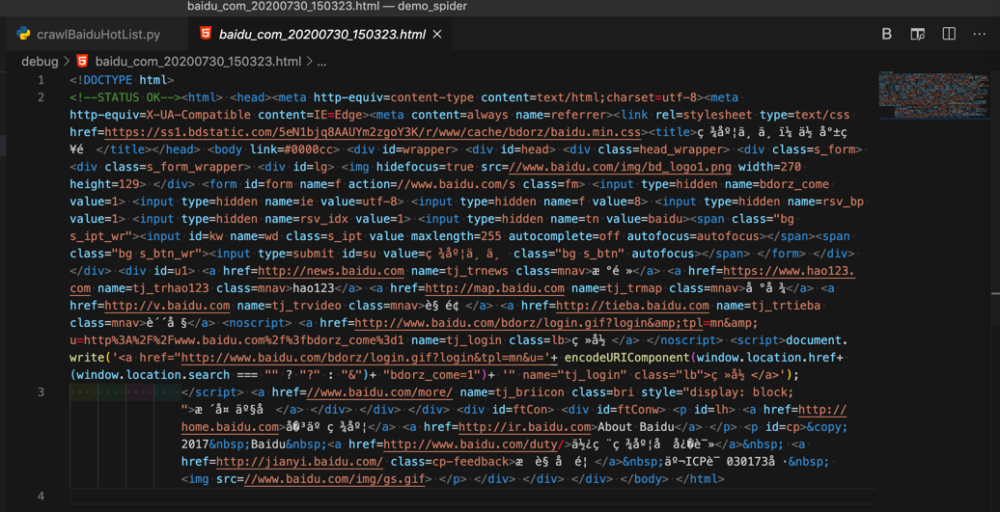
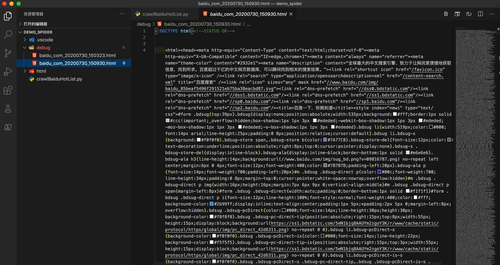
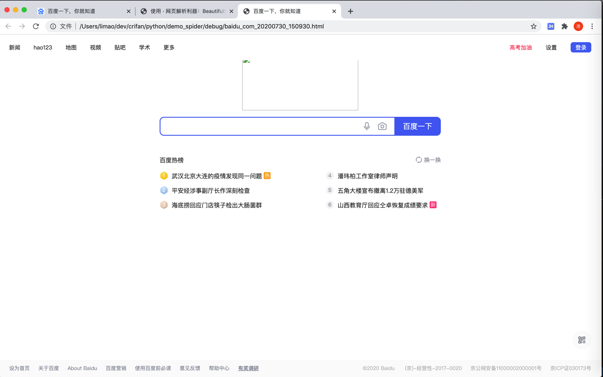
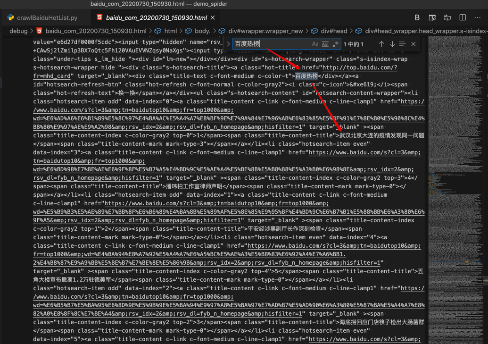
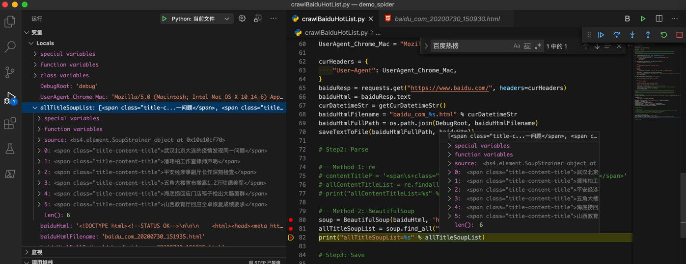
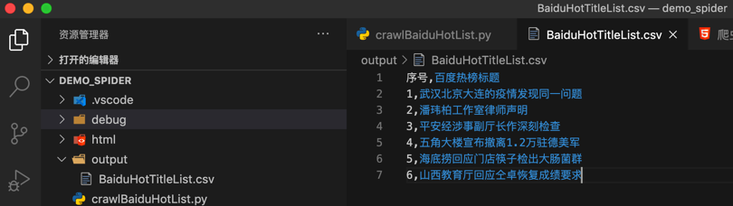
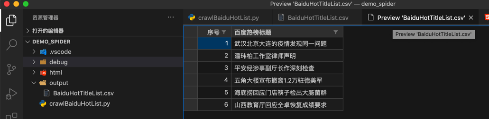
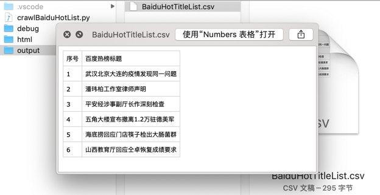

用第三方Python库
此处记录从无到有的核心过程：
先写出核心代码：
import requests
baiduResp = requests.get("https://www.baidu.com/")
baiduHtml = baiduResp.text
curDatetimeStr = getCurDatetimeStr()
baiduHtmlFilename = "baidu_com_%s.html" % curDatetimeStr
baiduHtmlFullPath = os.path.join(DebugRoot, baiduHtmlFilename)
saveTextToFile(baiduHtmlFullPath, baiduHtml)
调试返回的html源码是：

很明显：没有包含我们希望的百度热榜的内容，且连其他的中文，比如百度一下之类的字眼都看不到
那么根据经验，需要加其他参数，甚至额外逻辑，才可能获取完整的html代码
而最先要去加上的，就是User-Agent
先去回去用 Chrome的开发者工具，看看当前的User-Agent是啥，找到值。
再去把User-Agent部分，加到requests中：
UserAgent_Chrome_Mac = "Mozilla/5.0 (Macintosh; Intel Mac OS X 10_14_6) AppleWebKit/537.36 (KHTML, like Gecko) Chrome/84.0.4147.89 Safari/537.36"
curHeaders = {
"User-Agent": UserAgent_Chrome_Mac,
}
baiduResp = requests.get("https://www.baidu.com/", headers=curHeaders)
再去试试，此处我们很幸运，立刻就可以返回，大量的内容：

看起来就是正确的，估计包含我们要找到的 百度热榜 的内容了。
另外顺带，直接用浏览器打开此处抓取到的本地的离线的html，看看效果是什么样的：

可见（由于本身页面简单不复杂），除了首页logo外，页面效果和浏览器打开的基本一致。
也验证了前面的推测，确认就是完整的源码了。
去搜索 百度热榜

的确可以找到我们要的内容。
更多情况下获取完整的全部源码要难很多
此处只加了User-Agent就可以返回所需全部的完整的页面源码，是很幸运的。
因为随着web技术发展，反扒技术进步，稍微有点点技术含量的公司所做的web页面，尤其是页面逻辑复杂的，涉及到多个页面的
想要获取完整页面源码，往往都需要加上其他更多参数，才（可）能获取到期望的返回结果。
而关于其他更多参数，常见的一些有：
- 简单的
- Accept
- Accept-Encoding
- Accept-Language
- Host
- Referer
- 复杂的
- Cookie
- 很多值，很难获取到（搞懂生成的逻辑）
- Cookie
所以可以接着，去用之前分析出的规则，去解析内容了。
此处用第三方Python的HTML解析库BeautifulSoup：
# Method 2: BeautifulSoup
soup = BeautifulSoup(baiduHtml, 'html.parser')
allTitleSoupList = soup.find_all("span", attrs={"class":"title-content-title"})
print("allTitleSoupList=%s" % allTitleSoupList)
可以解析到所需内容：

再去加上代码，把soup的string保存出来：
allContentTitleList = []
for eachTitleSoup in allTitleSoupList:
titleStr = eachTitleSoup.string
allContentTitleList.append(titleStr)
print("allContentTitleList=%s" % allContentTitleList)
就是我们要的列表了：
allContentTitleList=['武汉北京大连的疫情发现同一问题', '潘玮柏工作室律师声明', '平安经涉事副厅长作深刻检查', '五角大楼宣布撤离1.2万驻德美军', '海底捞回应门店筷子检出大肠菌群', '山西教育厅回应仝卓恢复成绩要求']
至此下载和提取都完成了
接着去保存内容，如前面假设，比如保存到csv文件中
def saveToCsvByDictList(csvDictList, outputFilePath):
# generate csv headers from dict list
firstItemDict = csvDictList[0]
csvHeaders = list(firstItemDict.keys())
with codecs.open(outputFilePath, "w", "UTF-8") as outCsvFp:
csvDictWriter = csv.DictWriter(outCsvFp, fieldnames=csvHeaders)
# write header by inner function from fieldnames
csvDictWriter.writeheader()
for eachRowDict in csvDictList:
csvDictWriter.writerow(eachRowDict)
# save to csv
OutputCsvHeader = ["序号", "百度热榜标题"]
OutputCsvFilename = "BaiduHotTitleList.csv"
OutputCsvFullPath = os.path.join(OutputRoot, OutputCsvFilename)
outputCsvDictList = []
for curIdx, eachTitle in enumerate(allContentTitleList):
curNum = curIdx + 1
csvDict = {
"序号": curNum,
"百度热榜标题": eachTitle
}
outputCsvDictList.append(csvDict)
saveToCsvByDictList(outputCsvDictList, OutputCsvFullPath)
即可保存出我们要的csv文件：

以及，用VSCode中csv插件去以列表方式查看的效果：

和Mac中的预览效果：

至此，实现完整的爬虫功能：
- 下载百度首页源码
- 提取所需的百度热榜的标题内容
- 保存内容为csv格式
完整代码
# Function: Demo how use Python crawl baidu.com 百度热榜
# Author: Crifan
# Update: 20200731
import os
import codecs
from datetime import datetime,timedelta
# import urllib.request
# import re
import requests
from bs4 import BeautifulSoup
import csv
DebugRoot = "debug"
OutputRoot = "output"
################################################################################
# Utils Functions
################################################################################
def createFolder(folderFullPath):
"""
create folder, even if already existed
Note: for Python 3.2+
"""
os.makedirs(folderFullPath, exist_ok=True)
def saveTextToFile(fullFilename, text, fileEncoding="utf-8"):
"""save text content into file"""
with codecs.open(fullFilename, 'w', encoding=fileEncoding) as fp:
fp.write(text)
fp.close()
def datetimeToStr(inputDatetime, format="%Y%m%d_%H%M%S"):
"""Convert datetime to string
Args:
inputDatetime (datetime): datetime value
Returns:
str
Raises:
Examples:
datetime.datetime(2020, 4, 21, 15, 44, 13, 2000) -> '20200421_154413'
"""
datetimeStr = inputDatetime.strftime(format=format)
# print("inputDatetime=%s -> datetimeStr=%s" % (inputDatetime, datetimeStr)) # 2020-04-21 15:08:59.787623
return datetimeStr
def getCurDatetimeStr(outputFormat="%Y%m%d_%H%M%S"):
"""
get current datetime then format to string
eg:
20171111_220722
:param outputFormat: datetime output format
:return: current datetime formatted string
"""
curDatetime = datetime.now() # 2017-11-11 22:07:22.705101
# curDatetimeStr = curDatetime.strftime(format=outputFormat) #'20171111_220722'
curDatetimeStr = datetimeToStr(curDatetime)
return curDatetimeStr
def saveToCsvByDictList(csvDictList, outputFilePath):
# generate csv headers from dict list
firstItemDict = csvDictList[0]
csvHeaders = list(firstItemDict.keys())
with codecs.open(outputFilePath, "w", "UTF-8") as outCsvFp:
csvDictWriter = csv.DictWriter(outCsvFp, fieldnames=csvHeaders)
# write header by inner function from fieldnames
csvDictWriter.writeheader()
for eachRowDict in csvDictList:
csvDictWriter.writerow(eachRowDict)
def saveToCsvByHeaderAndList(csvHeaderList, csvRowListList, outputFilePath):
with codecs.open(outputFilePath, "w", "UTF-8") as outCsvFp:
csvWriter = csv.writer(outCsvFp)
# write header from list
csvWriter.writerow(csvHeaderList)
# type1: write each row
# for eachRowList in csvRowListList:
# csvWriter.writerow(eachRowList)
# type2: write all rows
csvWriter.writerows(csvRowListList)
################################################################################
# Main
################################################################################
createFolder(DebugRoot)
createFolder(OutputRoot)
curDatetimeStr = getCurDatetimeStr()
# Step1: Download
UserAgent_Chrome_Mac = "Mozilla/5.0 (Macintosh; Intel Mac OS X 10_14_6) AppleWebKit/537.36 (KHTML, like Gecko) Chrome/84.0.4147.89 Safari/537.36"
curHeaders = {
"User-Agent": UserAgent_Chrome_Mac,
}
baiduUrl = "https://www.baidu.com/"
# # Method 1 (pure python built-in lib, no third-party lib): urllib
# baiduResp = urllib.request.urlopen(baiduUrl)
# baiduHtmlBytes = baiduResp.read()
# baiduHtml = baiduHtmlBytes.decode()
# Method 2 (use third-party lib): requests
baiduResp = requests.get(baiduUrl, headers=curHeaders)
baiduHtml = baiduResp.text
# for debug
baiduHtmlFilename = "baidu_com_%s.html" % curDatetimeStr
baiduHtmlFullPath = os.path.join(DebugRoot, baiduHtmlFilename)
saveTextToFile(baiduHtmlFullPath, baiduHtml)
# Step2: Parse=Extract
# # Method 1 (pure python built-in lib, no third-party lib): re
# contentTitleP = '<span\s+class="title-content-title">(?P<contentTitle>[^<>]+)</span>'
# allContentTitleList = re.findall(contentTitleP, baiduHtml)
# Method 2 (use third-party lib): BeautifulSoup
soup = BeautifulSoup(baiduHtml, 'html.parser')
allTitleSoupList = soup.find_all("span", attrs={"class":"title-content-title"})
print("allTitleSoupList=%s" % allTitleSoupList)
allContentTitleList = []
for eachTitleSoup in allTitleSoupList:
titleStr = eachTitleSoup.string
allContentTitleList.append(titleStr)
print("allContentTitleList=%s" % allContentTitleList)
# Step3: Save
# save to csv
OutputCsvHeader = ["序号", "百度热榜标题"]
OutputCsvFilename = "BaiduHotTitleList_%s.csv" % curDatetimeStr
OutputCsvFullPath = os.path.join(OutputRoot, OutputCsvFilename)
outputCsvDictList = []
for curIdx, eachTitle in enumerate(allContentTitleList):
curNum = curIdx + 1
csvDict = {
"序号": curNum,
"百度热榜标题": eachTitle
}
outputCsvDictList.append(csvDict)
saveToCsvByDictList(outputCsvDictList, OutputCsvFullPath)
print("Completed save data to %s" % OutputCsvFullPath)